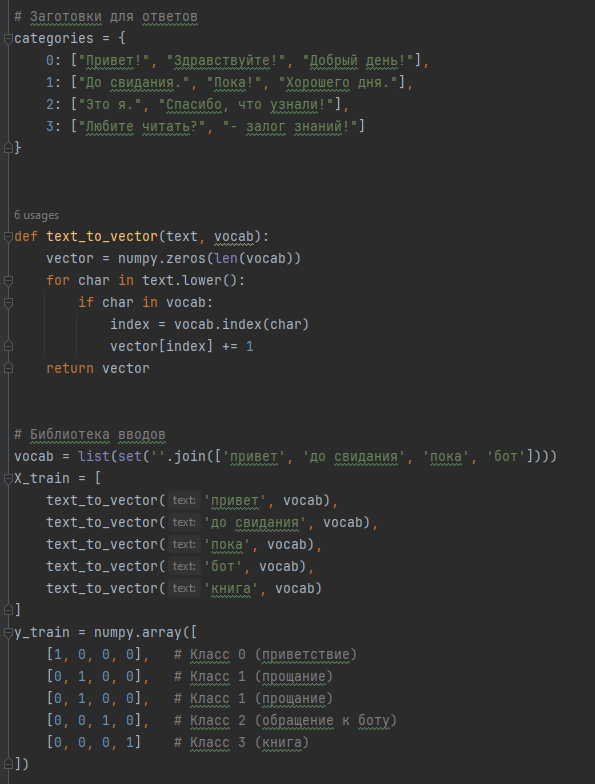
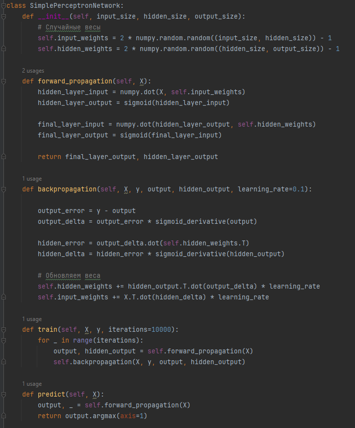

Цель:
● Создать ИИ
Задачи:
- ● Изучить язык программирования, необходимый для кода.
- ● Изучить строение и принцип работы ИИ.
- ● Нейросеть на базе прямой проверки.
- ● Нейросеть на базе перцептрона.

-=Классификация выводов и получаемых слов=-

-=Перевод слов в численные значения=-
Код способен определить слова, которые могут быть классифицированы, а это, в
свою очередь, открывает возможность обучить нейросеть, создав достаточное
количество классов.
Ключевое отличие от прошлого варианта нейросети: код пропускает все слова через
один и тот же алгоритм.